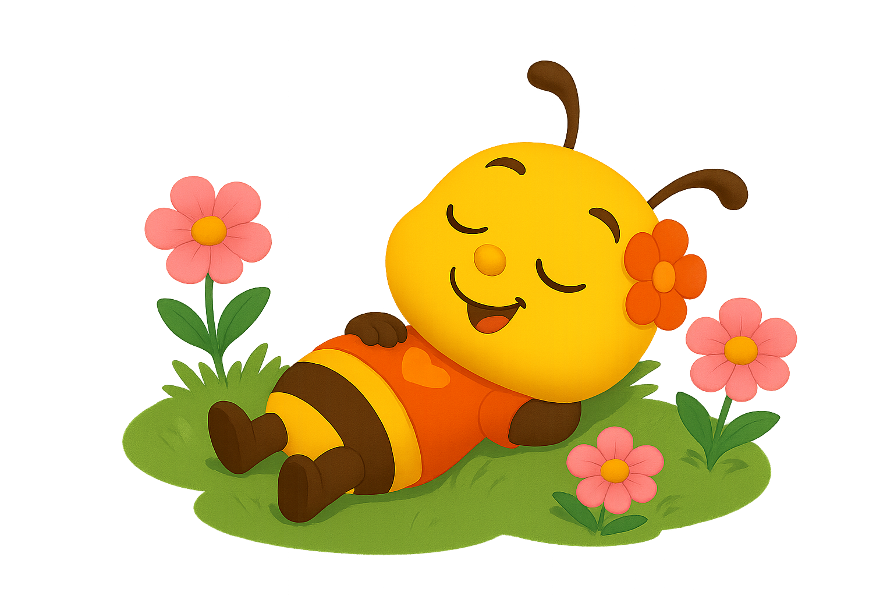
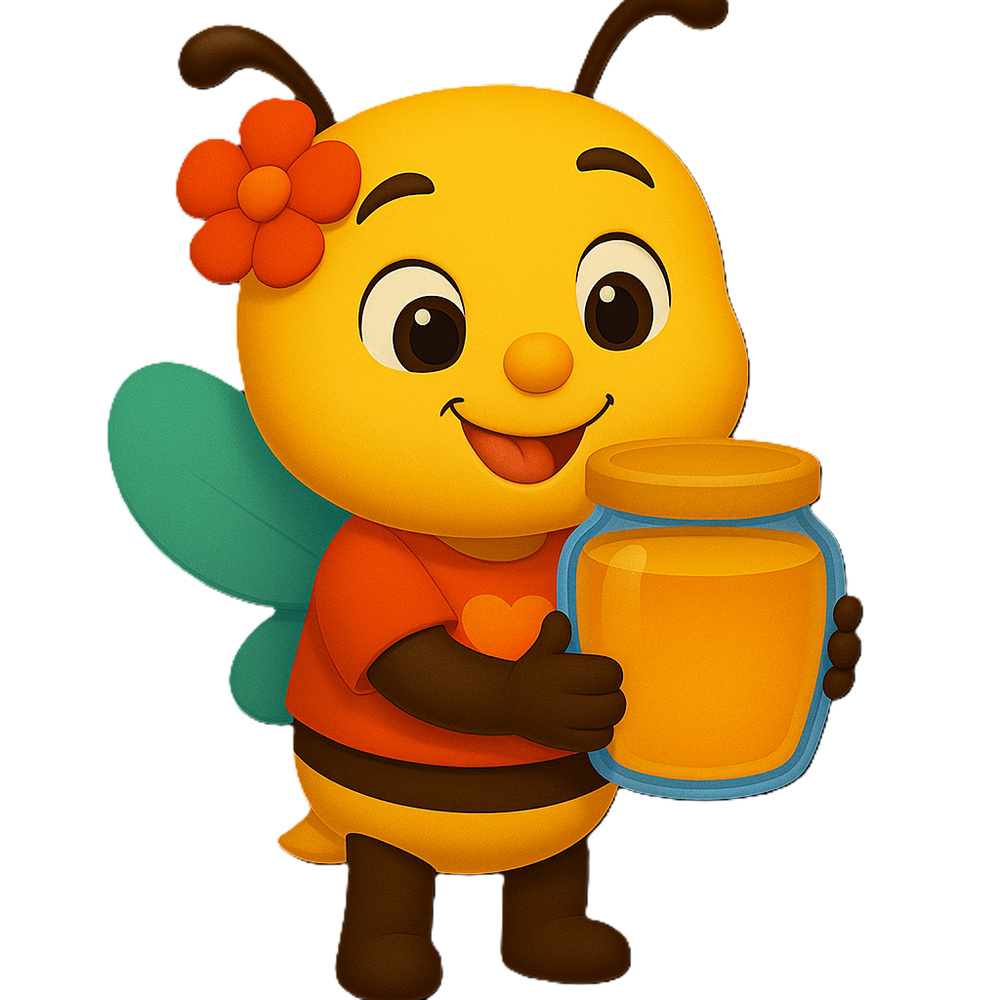
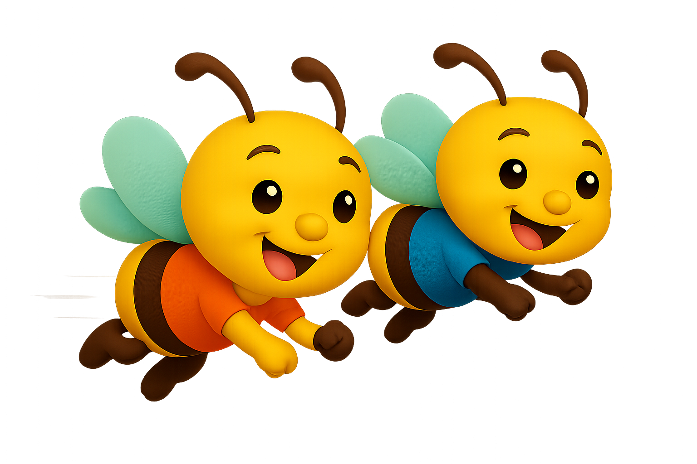

De bloemenweide
Laat de bloem groeien met juiste antwoorden.

Kies het spel dat jij leuk vindt.

Laat de bloem groeien met juiste antwoorden.

Vul de honingpot door sommen op te lossen.

Reken snel en vlieg naar de finish.